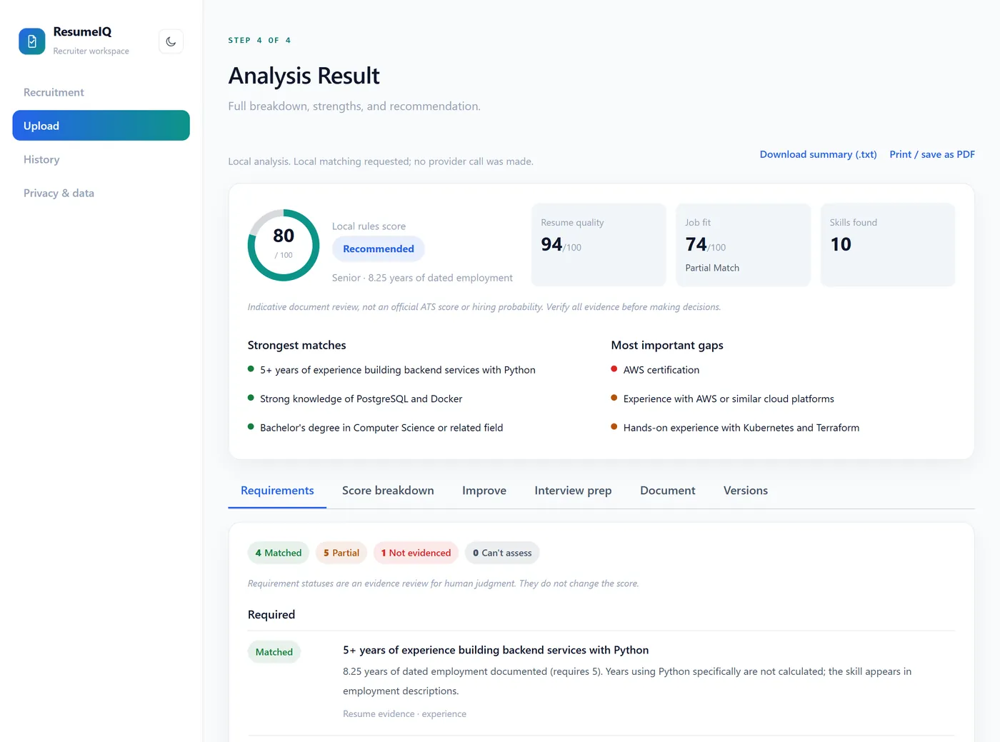
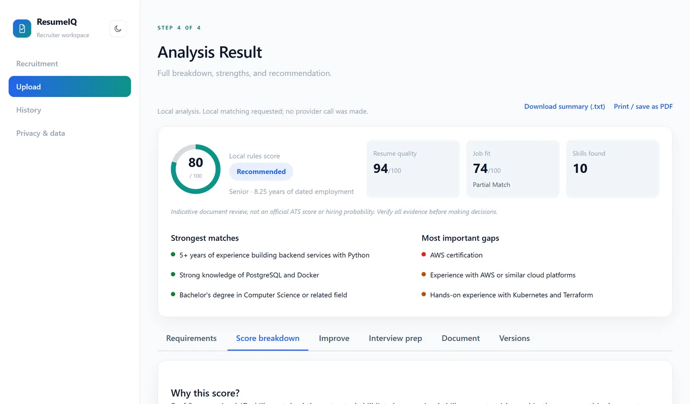
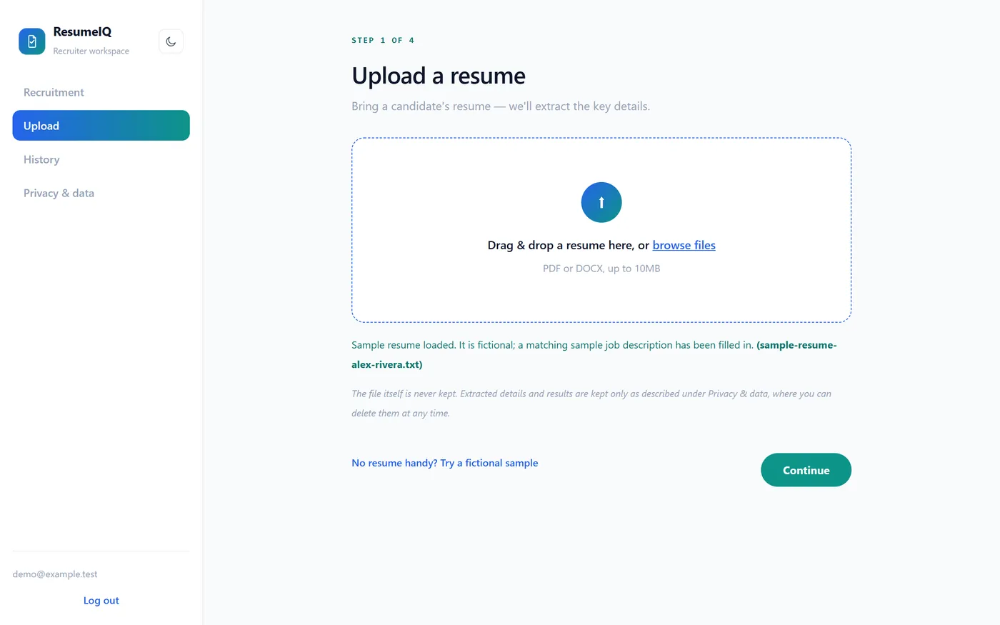

Selected work / Case study 02
ResumeIQ
A resume checker that explains its number, quotes its evidence, and keeps AI on a short, validated leash.
The problem
Most resume checkers hand back a single number.
You can’t see which job requirements the resume actually evidences, how the number was computed, or which honest change would move it. When AI is involved, it often rewrites claims the candidate never made.
Why it matters
Resume scores influence real decisions on both sides of hiring. An unexplained score can’t be argued with, and an AI rewrite that adds a skill you don’t have is a liability, not help.
My contribution
ResumeIQ was started by Arisha Salman in July 2026; her first commits built the original app, a sidebar/wizard layout and AI skill categorisation.
In October 2026 I led the rebuild, in a series of merged pull requests:
- Explainable results: requirement-by-requirement review with quoted evidence, the score formula, and “what would change this score” simulations.
- An improvement assistant with grounded AI rewrites, plus readability checks for document risks.
- Privacy controls, resume versions, optional SQLite persistence, a bundled fictional demo, Docker and CI configuration.
- A configurable OpenAI-compatible AI provider (OpenRouter or Gemini directly).
- The recruiter workspace: per-job workspaces, private notes and tags, a pipeline board and CSV/PDF comparison exports.
Architecture & decisions
Business logic lives in the FastAPI backend; the React frontend renders backend results and never recomputes scores.
- Local rules first, AI beside them.Rule-based matching is always computed. When the user opts in and a key is configured, AI matching runs too — its output is validated, retried once if malformed, and shown next to the local score, never silently replacing it.
- Every requirement gets a status and a reason.Matched, Partial, Not evidenced or Can’t assess — each with a quote from the resume and a label saying whether it is evidence or inference.
- A grounding validator on every rewrite.AI rewrites are kept only if they add no new numbers, tools, names or seniority. Anything else is rejected.
- No automatic ranking of people.The recruiter workspace compares candidates side by side and keeps upload order; filters and tags never reorder candidates.
- Exports that can’t attack the reader.CSV exports are formula-injection safe, and private notes are excluded unless explicitly included.
Evidence
Screenshots from the repository use its bundled fictional sample resume, so they contain no real personal data.



| Check | Result |
|---|---|
| Backend unit tests (end of phase 6) | 299 passing, including security, network-guard, notes/tags and export suites |
| Frontend Node tests | 72 passing |
| Browser QA | Playwright recruiter-workflow script, recorded in the phase reports |
| Docker and CI | Configuration written; per the README, not yet built or run in the verification environment |
Limitations & next steps
Scores are indicative heuristics — not official ATS scores, and not hiring probabilities. The app says so on every result.
- Extraction is rule-based with a bounded skill vocabulary; complex layouts and scanned PDFs (no OCR) can lose information.
- Statuses based on related skills or similar wording are inferences. Certification validity and degree completion are not verified.
- The rewrite validator is deliberately strict and may reject useful output; every draft still needs human review.
- Sessions live in process memory on a single worker, so a restart signs users out.
Next: opt-in OCR for scanned resumes, persistent sessions with multiple workers, a data-driven skill vocabulary, and a hosted demo.
Outcome
A full-stack application that gives candidates and recruiters useful, honest feedback with its evidence attached — without letting an external AI service quietly decide the result.
What I’d do differently
- Build and run the Docker images and CI in the same pass as writing them; the README still lists them as not yet run.
- Ship a hosted demo with the bundled fictional resume, so reviewers can try it without cloning.
- Move sessions out of process memory early, so a restart doesn’t sign everyone out.